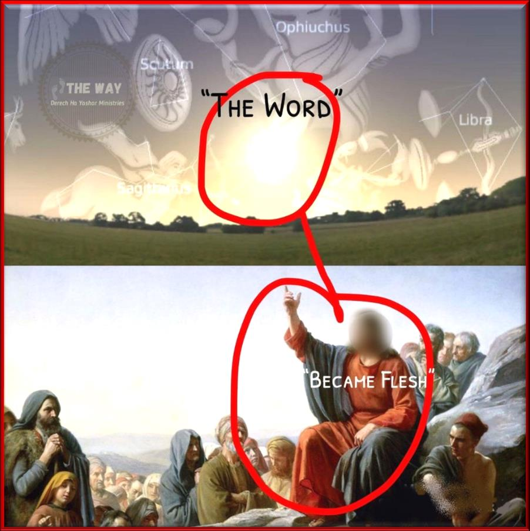

Divine Emanation?
One of the false doctrines that have evolved in Christianity is that יהוה created the Universe through “Jesus” by the process called
Merriam-Webster’s Dictionary
Emanation
b: the origination of the world by a series of hierarchically descending radiations from the Godhead through intermediate stages to matter
The doctrine of Divine Emanation from יהוה through Yahushua implying Yahushua was co-creator is another “implied doctrine” taken from “sound bites” of scripture. The main scripture is the uninspired translation of Yochanan/John Chapter 1:
1 In the beginning was the Word, and the Word was with God, and the Word was God. 2 He was with God in the beginning. 3 Through him all things were made; without him nothing was made that has been made.
I have already demonstrated that the true meaning of Yochanan Chapter 1 says nothing like the uninspired English modern translations as they used the Babylonian myth associated with “logos” to translate that verse. The real meaning of Yochanan Chapter 1 is:
1 In the beginning was the plan of יהוה, and the plan was with יהוה (and defined His purpose in creation), and the plan was יהוה's. 2 The same plan was in the beginning with יהוה. 3 All things were done according to the plan of יהוה, and without the plan of יהוה nothing was done, that was done.
Scripture is very clear that יהוה created the Universe all alone, there was no one with Him and that יהוה alone sits on the throne of Creation. Yahushua sits at the right hand of יהוה and was only seated there after his resurrection. Yahushua sits on the throne of The Kingdom of יהוה as יהוה’s proxy King to govern יהוה’s creation.
Daniel 713“I kept looking in the night visions, and behold, with the clouds of heaven One (Yahushua) like a Son of Man (born human) was coming, And He (Yahushua) came up to the Ancient of Days (יהוה who is everlasting and had no beginning, they are not the same being) And Yahushua was presented before יהוה. 14“And to Him (Yahushua) was given (by יהוה as an inheritance) dominion, Esteem, and a kingdom, that all the peoples, nations and men of every language Might serve Him (not worship Yahushua, we serve Yahushua in The Kingdom). His dominion is an everlasting dominion which will not pass away; and His kingdom is one which will not be destroyed.
Like all “implied doctrines” the false doctrines of The Trinity, The Incarnation, and Divine Emanation violate direct explicate declarations in Scripture. יהוה alone is Creator:
Yeshayahu/Isaiah 446“This is what יהוה says — Yisra’el’s King (Yahushua had not yet been installed as יהוה’s proxy King) and Redeemer, יהוה Almighty: I am the first and I am the last; apart from me there is no Elohim.
Yeshayahu/Isaiah 4424“This is what יהוה says— your Redeemer, who formed you in the womb: I am יהוה, the Maker of all things, who stretches out the heavens, who spreads out the earth by Myself.
Yeshayahu/Isaiah 425This is what יהוה says— He who created the heavens and stretched them out, who spread out the earth and all that comes out of it, who gives breath to its people, and life to those who walk on it:
Yeshayahu/Isaiah 455I am יהוה, and there is no one else – there is no Elohim besides Me. I gird you, though you have not known Me, 6so that they know from the rising of the sun to its setting that there is none but Me. I am יהוה, and there is none else, 7I form the light and create darkness, I bring prosperity and create disaster; I, יהוה, do all these things. 12It is I who made the earth and created mankind upon it. My own hands stretched out the heavens; I marshaled their starry hosts. 18For this is what יהוה says— He who created the heavens, He (alone) is Elohim; He who fashioned and made the earth, He founded it; He did not create it to be empty, but formed it to be inhabited— He says: "I am יהוה, and there is no other (Elohim)."
Yeshayahu/Isaiah 465 "To whom will you compare me or count me equal? To whom will you liken me that we may be compared? 8 "Remember this, fix it in mind, take it to heart, you rebels. 9Remember the former things, those of long ago; I am Elohim, and there is no other; I am Elohim, and there is none like me. 10I make known the end from the beginning, from ancient times, what is still to come. I say: My purpose will stand, and I will do all that I please.
יהוה makes it crystal clear that He alone is The Creator and He alone sits on The Throne of Creation. Yes, יהוה is The Creator and He did it all alone. Despite all the rhetoric from the Christian Church about “the Trinity” and “divine emanation”, “Divine Logos”, and so forth… יהוה cleared it up. He did it by Himself. There was no one with Him.
Another “sound bite doctrine” to proof Yahushua was a co-creator is:
Qolasim/Colossians 116Because in Him were created all that are in the heavens and that are on earth, visible and invisible, whether thrones or rulerships or principalities or authorities – all have been created through Him and for Him. Footnote: c Joh_1:3.
The Passion Translation -16 For through the Son everything was created, both in the heavenly realm and on the earth, all that is seen and all that is unseen. Every seat of power, realm of government, principality, and authority—it was all created through him and for his purpose!
The translators used the word through, lets see what the dictionaries say about this word.
G1223 διά dia
A primary preposition denoting the channel of an act; through (in very wide applications, local, causal or occasional). In composition it retains the same general import: - after, always, among, at, to avoid, because of (that), briefly, by, for (cause) . . . fore, from, in, by occasion of, of, by reason of, for sake, that, thereby, therefore, X though, through (-out), to, wherefore, with (-in).
A more correct translation will be:
The Passion Translation -16 For the sake of the Son everything was created, both in the heavenly realm and on the earth, all that is seen and all that is unseen. Every seat of power, realm of government, principality, and authority—it was all created because of him and for his purpose!